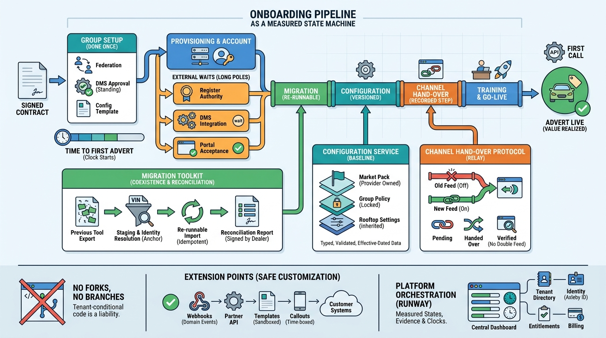

Part V — SAAS: Tenants, Access and the Commercial Model
From Signed Contract to First Sale: Onboarding, Migration and Configuration

Image generated by Google Gemini (gemini-3-pro-image-preview)
Part V — SAAS: Tenants, Access and the Commercial Model

Image generated by Google Gemini (gemini-3-pro-image-preview)